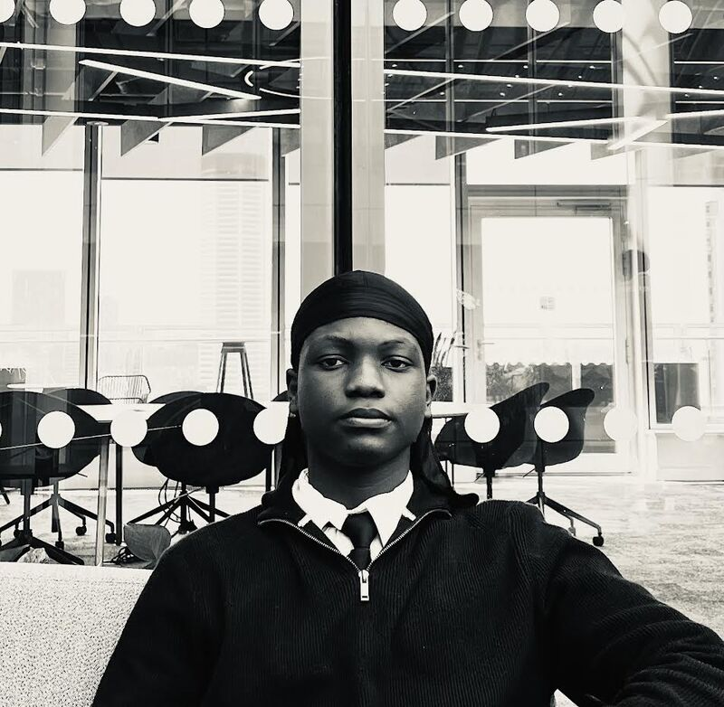

Hi, I'm Oreoluwa Joseph Adebayo, a sixth-form student with a growing interest in software engineering, artificial intelligence and technology.
My interest in technology began long before I had access to the resources to fully explore it. Growing up in Nigeria, films such as Astro Boy and Big Hero 6 sparked my imagination and introduced me to the possibilities of engineering and technology. As a young boy, I found myself imagining what it would be like to build things, create new technology and use engineering to solve problems. However, limited access to technology and resources meant that, for a while, this remained more of a dream than something I could actively pursue.
Despite this, my curiosity continued to grow. What began as an interest in films and the technology I saw around me gradually developed into a deeper curiosity about how software and systems actually work. Over time, that curiosity became a desire to understand how technology can be designed and built to solve real-world problems.
Moving to the UK opened new opportunities and gave me greater access to the education, technology and experiences that could help me turn that childhood dream into something more tangible. It showed me that the dream I had as a young boy was still achievable; I simply needed the opportunity and resources to pursue it.
Today, I am studying Mathematics, Physics and Computer Science at A-level. Alongside my studies, I have been exploring technology through programming, personal projects and industry experience.
I've had the opportunity to gain insight into different areas of technology through experiences including cyber security work experience with National Grid and a behind-the-scenes work experience with Rolls-Royce. These experiences have helped me understand how technology, problem solving and collaboration can be used to tackle real-world challenges.
One of my current projects is my A-level Computer Science NEA, where I am developing a personalised revision scheduling system designed to help students organise their study time around existing commitments. Through this project, I am continuing to develop my skills in Python, problem-solving, algorithms and software development.
I am particularly interested in software engineering, cyber security and artificial intelligence, and I continue to explore how technology can be used to create meaningful solutions to real-world problems.
Outside of technology, I have also developed skills through volunteering and coaching. Working with young people has helped me strengthen my communication, teamwork and leadership skills, while showing me the importance of making a positive impact beyond the technical side of my work.
This website is where I document my journey: the projects I am building, the skills I am learning and the experiences that are shaping my path towards a career in technology.
I'm still at the beginning of that journey, but I've come a long way from the young boy watching Astro Boy and Big Hero 6 and imagining what might be possible. Today, instead of simply imagining, I'm learning, building and taking steps towards making those possibilities a reality.